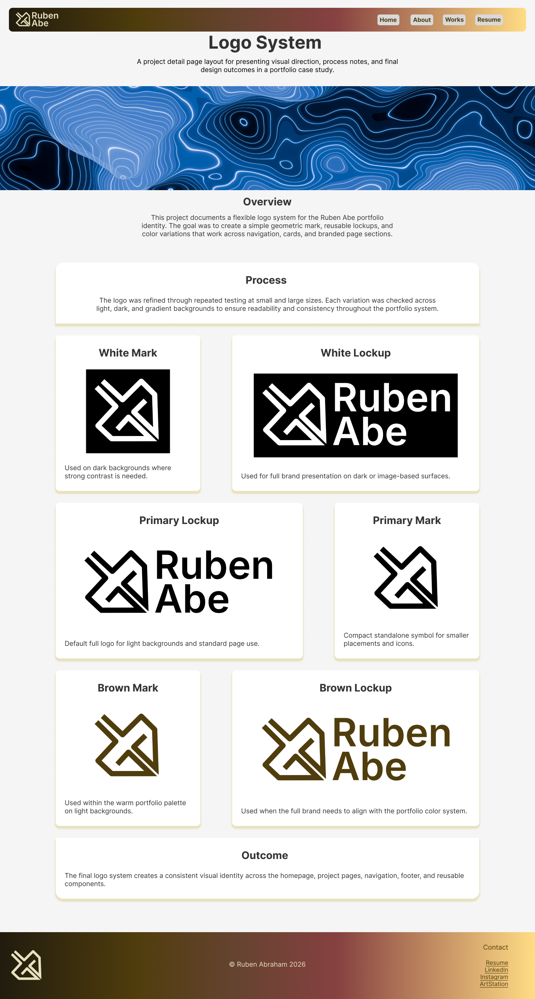

Role
RubenAbe Design System
A responsive mini design system built to document a personal portfolio identity, reusable interface components, and page patterns across desktop, tablet, and phone layouts.
Project Type
Design system website
Tools
Figma, Illustrator, HTML, CSS, Bootstrap
Timeline
April 2026 - June 2026
Overview
A working design system for a portfolio interface.
The RubenAbe Design System started as a visual identity and component system for a personal portfolio. The goal was to move beyond static mockups and turn the system into a working website with documented foundations, reusable components, and responsive page patterns.
The final system covers logo usage, color, typography, buttons, cards, navigation, footer structure, homepage layouts, and project detail layouts.
Visual Foundations
Logo, color, and type built for a warm portfolio identity.
Logo System
Flexible mark and lockup versions
The identity uses a sharp geometric logo mark with lockup variations for navigation, headers, dark surfaces, and clean documentation areas.
Color System
Warm neutrals and branded gradients
The palette combines light surfaces, cream, brown, dark text, and gradient surfaces to create a branded system without overpowering the content.
Inter
Bold titles, readable body text, compact labels.
Typography
Inter for structure and clarity
Inter is used across headings, body text, links, and button labels to keep the system clean, readable, and consistent across screen sizes.
Components
Reusable interface pieces for project pages and portfolio navigation.
Buttons
Primary, secondary, disabled, and text links
Button styles use clear hierarchy, hover states, and consistent rounded forms for portfolio actions.
View originalCards
Project previews with carved depth
The card component combines an image, category label, title, and description with a soft image hover state.
View originalNavigation
Responsive portfolio navigation
The navigation system keeps logo identity visible while grouping portfolio pages into clear dropdowns.
View originalFooter
Contact and identity footer
The footer closes each page with brand presence, copyright, email, and social links.
View originalComponent Detail
The project card became the main reusable preview pattern.
The card style was designed to feel embedded into the page surface, with a warm gradient fill and carved top depth. The hover interaction keeps the card still while the image subtly lifts, giving feedback without making the whole layout jump.
This became the base pattern for selected works and project previews in the portfolio.

Info. Architecture
MCA Chicago IA Redesign
Navigation redesign using content inventory, card sorting, tree testing, and wireframes.
Page Patterns
Responsive homepage and project detail templates.

Homepage Pattern
Landing page system
The homepage pattern defines the hero, featured work section, project cards, footer links, and responsive layout behavior.

Project Detail Pattern
Case study system
The project detail pattern creates a reusable structure for project overview, process sections, visuals, and outcomes.
System Scope
What this project delivered.
3
Visual foundations
4
Reusable components
2
Responsive page patterns
1
Live coded system site
Reflection
From static screens to a reusable coded system.
The biggest shift in this project was moving from isolated design screens into reusable front-end patterns. Instead of treating each page as a separate layout, I had to define rules that stayed consistent across navigation, cards, footer structure, and responsive page templates.
This project became the structural base for my own portfolio. Rather than ending as a class-only deliverable, the system created a working visual and coded foundation that can be extended into real case studies.
The next step would be improving accessibility checks, tightening reusable CSS tokens, and expanding the component library as the portfolio grows.